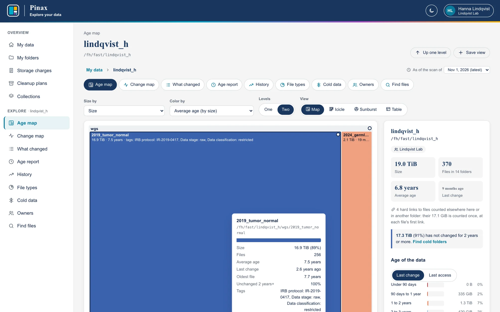
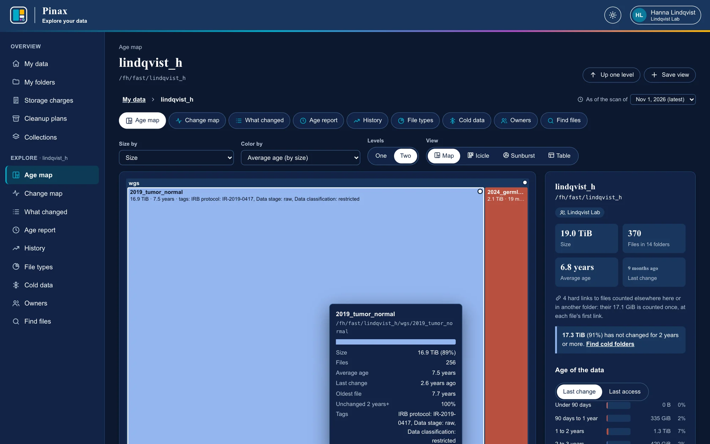

Age map
Find the old data in seconds
A treemap of any folder: each tile's area is how much it holds, its color how long since anything in it changed. A large dark blue tile is a lot of data nobody has touched in years.
- Size by size, space on disk, files, or one kind of data
- Color by average age, last change, oldest file, last access, or cold share
- Or a folder six levels deep at once, as an icicle or a sunburst
- A panel with the folder's ages, kinds of data, owner, tags, and plan

